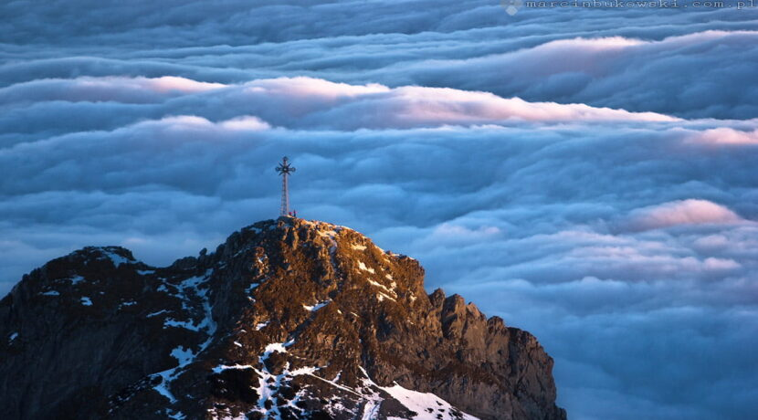
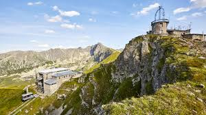

Cześć mam na imię Damian. Na codzień jestem przedstawicielem handlowym w firmie
produkcyjno handlowo usługowej "Maan". Obsługuję województwo świętokrzyskie, łódzkie, a tak że
po część małopolskie, mazowieckie oraz kujawsko-pomorskie. Prziedsiębiorstwo działa w branży budowlanej,
ogrodniczej, malarkiej itp. Moimi zainteresowaniami jest piłka nożna, programowanie oraz wycieczki
górksie o czym jest stworzony przeze mnie mini blog. Znajdziesz tu piękne zdjęcia z wielu pasm górskich,
informacje na temat wypraw którę odbyłem lub w przyszłosci chciałbym odbyć. Dodatkowo znajdziesz parę
wzkazuwek na co uważać podczas wypraw i to co zabrać ze sobą, aby w bezpieczny sposób przebyć całą
trasę.
| Nazwa szczytu | Pasmo | Wysokość szczytu | Kolor szlaku | Zdobyte Tak/Nie |
|---|---|---|---|---|
| Czerwone Wierchy | Tatry | 2122 m n.p.m. | Czerwony | Tak |
| Kasprowy Wierch | Tatry | 1987 m n.p.m. | Czerwony/Zielony | Tak |
| Giewont | Tatry | 1894 m n.p.m. | Żółty | Nie |
| Ornak | Tatry | 1854 m n.p.m. | Żółty/Czerwony/Zielony | Tak |
| Luboń Wielki | Beskid Wyspowy | 1022 m n.p.m. | Niebieski/Zielony | Tak |
| Ćwilin | Beskid Wyspowy | 1072 m n.p.m. | Niebieski/Zielony | Tak |
Czerwone wierchy

Giewont

Kasprowy Wierch